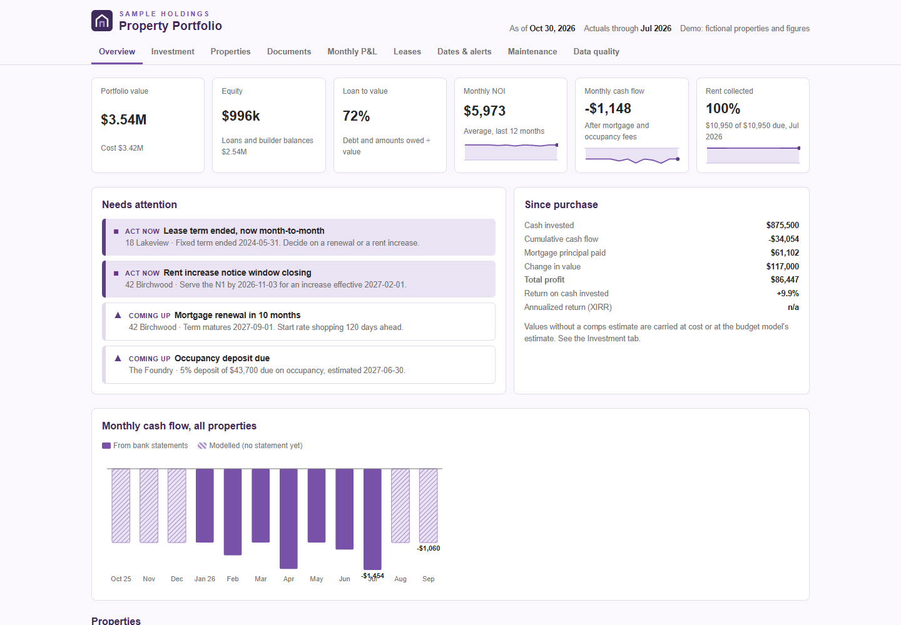

A monthly-refreshed dashboard that turns bank statements, purchase documents and comps research into an investor view of each property. The version here runs on fictional properties and figures.
Python calculation engineOne self-contained HTML filePlain JavaScript and inline SVGCSV and YAML inputs
9views, from overview to data quality
3labels on every figure: actual, modelled, estimate
12unit tests on the return calculations
0chart libraries: charts are hand-written SVG
The problem
A private client with a small rental portfolio, some units closed and some still under construction, had no single view of what each one was worth, what it earned and what needed attention. The facts were spread across bank statements, purchase agreements, leases and emails.
How it works
Reconciled transactions
→
Property terms and documents
→
Return calculations
→
One HTML dashboard
Nothing modelled is passed off as actual. Every number carries a badge: actual (from reconciled statements), modelled (from the property's configured terms) or estimate (from comps research). Charts hatch the modelled months.
Returns broken into their sources. Total profit is split into cash flow, principal paid down, change in value and closing costs, per property and for the portfolio.
Handles every stage. Closed and rented units, interim occupancy and pre-construction each get the right treatment, including a deposit schedule tracker for units not yet built.
Correct mortgage maths. Amortization uses Canadian semi-annual compounding, and annualized returns use XIRR on dated cash flows. Both are covered by unit tests.
Alerts without colour coding. Lease expiries, notice deadlines and renewals are ranked by stripe weight, glyph and wording, so the page reads the same for colour-blind users.
Checked against a second model. A separate Excel model with live formulas is generated from the same inputs, and a test confirms it matches the dashboard.

Overview tab, shown with fictional sample data.
All properties, people and figures in the demo are fictional and were generated for this site.